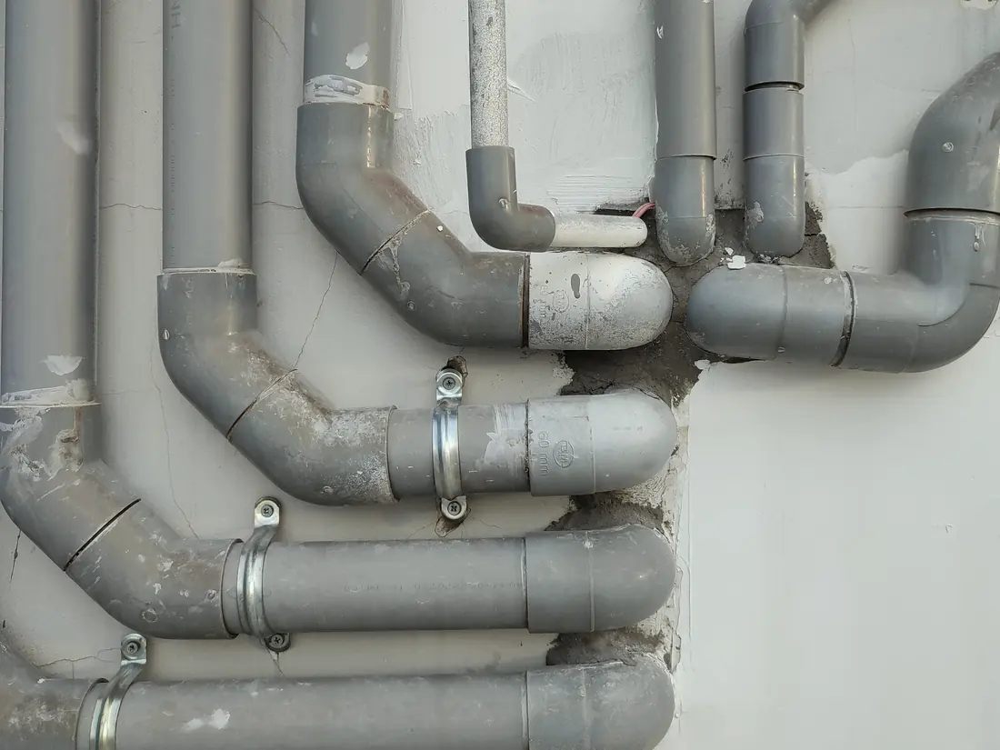

01
Ūdensvads un kanalizācijaВодопровод и канализация
Ūdensapgādes un kanalizācijas sistēmas mājām un citām ēkām: cauruļvadi, pievienojumi un ierīces. Ierīkojam pēc projekta.Системы водоснабжения и канализации для домов и других зданий: трубопроводы, подключения и приборы. Монтируем по проекту.